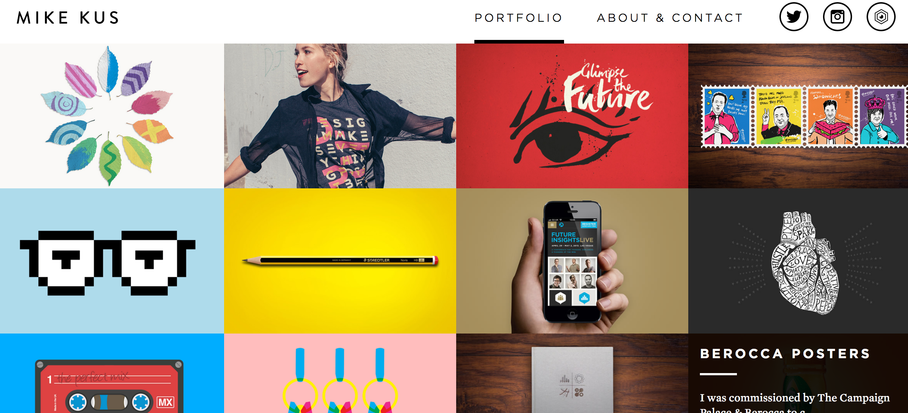
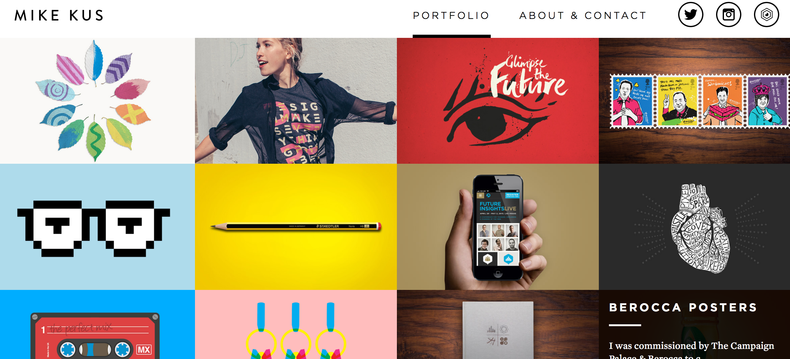

Snapshots


As a Graphic Design major, having a portfolio is one of the most important aspect of my profession. A good portfolio can lead to a good job. Sometimes, people have excellent work but due to poor organization of the work things can get pretty bad. As I am only a Junior in my first semester, I don’t have all that much work to show for myself - at least work that I actually like. All I have is a behance page which is quite an excellent resource, but eventually I'd really like to have all my work on a good and worthy portfolio site. It's a great idea to begin early and at least have a base for it all.
It would definitely serve as a modem to showcase my work for job applications and also to show to people who don't really understand what I do. Graphic Design is a highly misconstrued profession, but hopefully a portfolio website could change that.
I want my website to bee simple and to the point. I don't want too much to be going on because that would deviate from the work. A good and clean layout is what would be my primary focus.
I started exploring with illustrations after I entered Graphic Design. I taught myself how to use a tablet and realized that I do actually possess a style. I've always been fond of drawing but hated the messiness of it all; but going digital changed all that. The illustrations that I've done are mostly icons. There are just a few posters which are completely illustration based and I've incorporated my silkscreen-looking and a somewhat informal styling to it.
I wouldn't want all my work to be showcased. Just the ones that I would want to show and think possess caliber. Also the ones that I think show that I have skills required for a job such as layout, color, type, etc.
